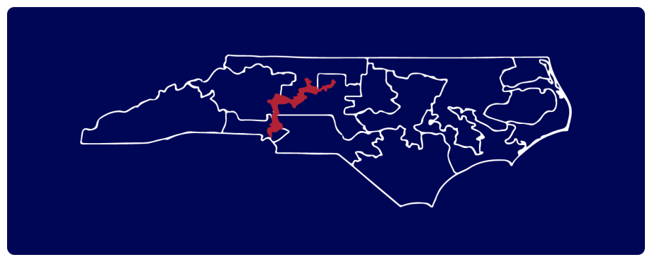

How we got here:
The collapse of
representative politics
in the United States of America
representative politics
in the United States of America
PART 1
Voter Participation
?
PART 1: Voter Participation
When nearly half of the country doesn’t vote in even the most important elections, how can we describe our democracy as truly representative of will of the people?
◀ Back
Go to section ▶
PART 2
Gerrymandering
?
PART 2: Gerrymandering
When elected officials have a say in who gets to vote in upcoming elections, the voters lose their influence in the political process. While strategic redistricting is nothing new, it continues to distort the voice of the people as a means of partisan gain.
◀ Back
Go to section ▶
PART 3
Political Divisions
?
PART 3: Political Divisions
It is worse now than ever, with each side of the political spectrum refusing to acknowledge the viewpoints of the opposing side. With an absence of productive discourse, party leaders control the narrative and can warp the opinions of the constituents they are supposed to represent.
◀ Back
Go to section ▶
An important note
When it comes to voting rights, the perception of America as an egalitarian utopia is ignorant
at best and historical negationism at worst. Throughout the history of this country, voting
rights have never been fully equal for all segments of society. Starting in 1789 with the first
voting laws, only white, land owning men could vote. This was a mere 6 percent of the United
States population at the time.
Practices that disenfranchise voters continue to exist today. Before diving into the subject, it
is essential to recognize the millions of racial minorities and women who were denied this
basic right for hundreds of years.
at best and historical negationism at worst. Throughout the history of this country, voting
rights have never been fully equal for all segments of society. Starting in 1789 with the first
voting laws, only white, land owning men could vote. This was a mere 6 percent of the United
States population at the time.
Practices that disenfranchise voters continue to exist today. Before diving into the subject, it
is essential to recognize the millions of racial minorities and women who were denied this
basic right for hundreds of years.
PART 1
Voter Participation
Nobody will ever deprive the American people of the
right to vote except the American people themselves
and the only way they could do this is by not voting.
right to vote except the American people themselves
and the only way they could do this is by not voting.
PART 1
How many Americans
actually vote?
actually vote?
According to recently published US Census Bureau figures, only about 56.9% of the
eligible, voting-age population cast their ballots in the 2016 presidential election. This
was a minor increase from the 2012 presidential race, but fell below the numbers
reported in 2008, a record year for voter participation. Compared internationally,
these numbers are dead last amongst developed democracies.
Some countries use compulsory voting to ensure their political process represents the
largest share of eligible voters possible. This is the case for three of the top five countries.
Regardless of tactics, general apathy toward elections can have a dangerous effect on the
population's ability to act as a check on government.
eligible, voting-age population cast their ballots in the 2016 presidential election. This
was a minor increase from the 2012 presidential race, but fell below the numbers
reported in 2008, a record year for voter participation. Compared internationally,
these numbers are dead last amongst developed democracies.
Some countries use compulsory voting to ensure their political process represents the
largest share of eligible voters possible. This is the case for three of the top five countries.
Regardless of tactics, general apathy toward elections can have a dangerous effect on the
population's ability to act as a check on government.
10%
20%
30%
40%
50%
60%
70%
80%
90%
100%
87.2%
84.3%
82.6%
80.4%
76.1%
71.2%
66.0%
62.1%
62.1%
61.1%
60.9%
56.9%
Belgium
Turkey
Sweden
South Korea
Israel
France
Germany
Canada
Greece
United Kingdom
Spain
United States
Percent of eligible population that votes in national elections
PART 2
Gerrymandering
PART 2
Gerrymandering:
boring but important
boring but important
While the concept of redistricting is rife with legalese and obscure historical precedent,
it has massive implications on our representative democracy. The term “Gerrymander”
was coined in the 1800’s and named for the governor of Massachusetts at the time,
Elbridge Gerry. He used his political influence to redraw the legislative districts in a
way that benefited his party. In the 200 years since, state legislatures across the United
States have redrawn districts to increase the influence of some voters over others.
Government disfunction and polarization is a direct result of this practice, as it groups
voters by political leanings and not by geographic area. Overall, this practice inhibits
our government's ability to accurately gauge the views of the populace, distorting the
representative nature of the election process.
it has massive implications on our representative democracy. The term “Gerrymander”
was coined in the 1800’s and named for the governor of Massachusetts at the time,
Elbridge Gerry. He used his political influence to redraw the legislative districts in a
way that benefited his party. In the 200 years since, state legislatures across the United
States have redrawn districts to increase the influence of some voters over others.
Government disfunction and polarization is a direct result of this practice, as it groups
voters by political leanings and not by geographic area. Overall, this practice inhibits
our government's ability to accurately gauge the views of the populace, distorting the
representative nature of the election process.
During the 2012 election cycle in Pennsylvania, 51%
of the votes cast in the U.S. House elections were for
Democrats, yet the Democratic Party only won 5 out
of 18 seats.
of the votes cast in the U.S. House elections were for
Democrats, yet the Democratic Party only won 5 out
of 18 seats.
Case Study:
America's most gerrymandered district
North Carolina's 12th congressional district has been redrawn five
times since 1993. The newest outline was drawn in February 2016 after
a federal court ruled that the lines had been drawn to concentrate black
voters and limit their influence.
times since 1993. The newest outline was drawn in February 2016 after
a federal court ruled that the lines had been drawn to concentrate black
voters and limit their influence.
1993–1998
1999-2000

2001-2002
2003-2013
2014-2016
Feb. 2016
How Gerrymandering Works
Say you have a small state made up of just 50 people. Of this population, 30 are part of the
white party and 20 are part of the red party. It just so happens that the people of this state
live in a perfect grid, with the white party and red party voters grouped on opposite sides.
If we are going to divide this new state into 5 districts, there are a number of ways we can
segment the population. As you can see in the next chart, the way that these lines are
drawn can have a significant impact on the result of the vote.
white party and 20 are part of the red party. It just so happens that the people of this state
live in a perfect grid, with the white party and red party voters grouped on opposite sides.
If we are going to divide this new state into 5 districts, there are a number of ways we can
segment the population. As you can see in the next chart, the way that these lines are
drawn can have a significant impact on the result of the vote.
50 people
60% White
40% Red
40% Red
Perfect
Representation
Representation

5 White Districts
0 red Districts
0 red Districts
White Wins
Compact,
But unfair
But unfair
3 White Districts
2 red Districts
2 red Districts
White Wins
Neither Compact,
nor fair
nor fair
2 White Districts
3 red Districts
3 red Districts
Red Wins
PART 3
Political Divisions
PART 3
Why can’t we all just
get along?
get along?
While the implications of political divisiveness play out on a daily basis in Washington,
the roots of this issue stems from the deep cultural, economic and societal divisions that
define American life across the country. A recent Wall Street Journal/NBC News survey
of social trends has found that this lack of political civility has been around for years
and is continuing to grow.
This partisan tribalism can have toxic effects on every level of government, stifling
compromise at the expense of the people. And while it may seem that there are other
factors that contribute to this divide, a recent Pew study found that public sentiment
remains more divided along partisan lines than along the lines of age, gender, race,
religion or education level.
the roots of this issue stems from the deep cultural, economic and societal divisions that
define American life across the country. A recent Wall Street Journal/NBC News survey
of social trends has found that this lack of political civility has been around for years
and is continuing to grow.
This partisan tribalism can have toxic effects on every level of government, stifling
compromise at the expense of the people. And while it may seem that there are other
factors that contribute to this divide, a recent Pew study found that public sentiment
remains more divided along partisan lines than along the lines of age, gender, race,
religion or education level.
Republicans are men of narrow vision,
who are afraid of the future.
who are afraid of the future.
The trouble with our Liberal friends is
not that they're ignorant; it's just that
they know so much that isn't so.
not that they're ignorant; it's just that
they know so much that isn't so.
Case Study:
Splintering of values along party lines
The polarization of fundamental beliefs held by each political party has
increased dramatically over the past decades. There seems to be no
middle ground on key issues such as immigration, the environment,
national security and government spending. In large part, this is due to
both parties becoming increasingly homogenous in their views.
increased dramatically over the past decades. There seems to be no
middle ground on key issues such as immigration, the environment,
national security and government spending. In large part, this is due to
both parties becoming increasingly homogenous in their views.
10%
20%
30%
40%
50%
60%
70%
80%
90%
100%
1994
1999
2004
2011
2015
1994
1999
2004
2011
2015
TOTAL:
30%
TOTAL:
41%
TOTAL:
48%
TOTAL:
49%
TOTAL:
60%
TOTAL:
45%
TOTAL:
34%
TOTAL:
31%
TOTAL:
50%
TOTAL:
54%
5
25
10
31
13
35
15
34
27
33
13
32
10
24
6
25
17
33
22
32
Percentage of Democrats with
political values that are…
political values that are…
Consistently liberal
Mostly liberal
Percentage of Republicans with
political values that are…
political values that are…
Consistently conservative
Mostly conservative
Why this matters
As both parties move farther apart ideologically, voters are pushed away from the middle of
the political spectrum and forced to identify with one party or the other if they hope to have
a voice in elections. The platform of each party has far-reaching implications, distilling a
variety of issues into a single choice on election day. When our politics are so deeply defined
by party, not individual issues, it is far easier for the will of the people to be manipulated.
This polarization impacts the legislative process itself, with individual politicians being
compelled to vote along party lines even when it is not in the best interests of their own
constituents. The combination of our current two-party system and the representative
nature of our democracy (as opposed to a direct democracy), has severely limited the
influence that voters have over their own government.
the political spectrum and forced to identify with one party or the other if they hope to have
a voice in elections. The platform of each party has far-reaching implications, distilling a
variety of issues into a single choice on election day. When our politics are so deeply defined
by party, not individual issues, it is far easier for the will of the people to be manipulated.
This polarization impacts the legislative process itself, with individual politicians being
compelled to vote along party lines even when it is not in the best interests of their own
constituents. The combination of our current two-party system and the representative
nature of our democracy (as opposed to a direct democracy), has severely limited the
influence that voters have over their own government.
Now, what actions will YOU take
to fix what is so clearly broken?
to fix what is so clearly broken?
SOURCES
- A Citizen’s Guide to Redistricting
The Brennan Center for Justice at NYU School of Law - Political Polarization in the American Public
The Pew Research Center, June 2014 - The Partisan Divide On Political Values Grows Even Wider
The Pew Research Center, October 2017 - U.S. trails most developed countries in voter turnout
The Pew Research Center, May 2017 - The Two Key Factors Behind our Polarized Politics
Jeff Stonecash, The Washington Post - How to Steal an Election: A Visual Guide
Christopher Ingraham, The Washington Post - The Decline of American Democracy
Kevin W. Saunders, Cambridge University Press